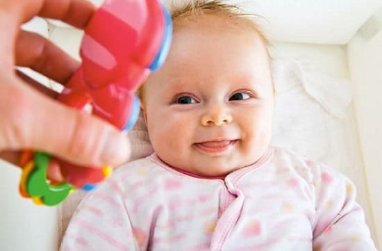

Видеть так, как взрослые, новорожденный, разумеется, не может. Все его реакции ограничиваются тем, что от очень яркого света он жмурится и иногда поворачивает к источнику света глаза. Уже к месячному возрасту малыш может ненадолго задерживать на чем-либо взгляд и также недолго за этим «чем-то» следить (речь идет о секундах). В течение последующих двух-трех месяцев возможность сопровождать взглядом движущийся предмет заметно улучшается. Вначале ребенок может следить лишь за игрушкой, которая движется в горизонтальной плоскости, но в четыре месяца уже свободно смотрит куда угодно – и вверх, и вниз, и в стороны. Ну а после этого возраста зрение начинает совершенствоваться очень быстро.

Советы и рекомендации:
1 нельзя допускать, чтобы в детской комнате была слабая освещенность. Это приводит к задержке способности различать цвета;
2 игрушки должны быть большими и яркими. Цвет их тоже имеет значение: в первом полугодии жизни – оптимально желтый и зеленый, а затем чем разнообразнее цвета, тем лучше;
3 для того, чтобы ребенок научился правильно видеть, не стоит в первые три-четыре месяца вешать перед ним игрушки на близком расстоянии (менее 40 см) – толком разглядеть он ничего не сможет, но есть риск развития косоглазия.
Е.О.Комаровский. "Здоровье ребенка"